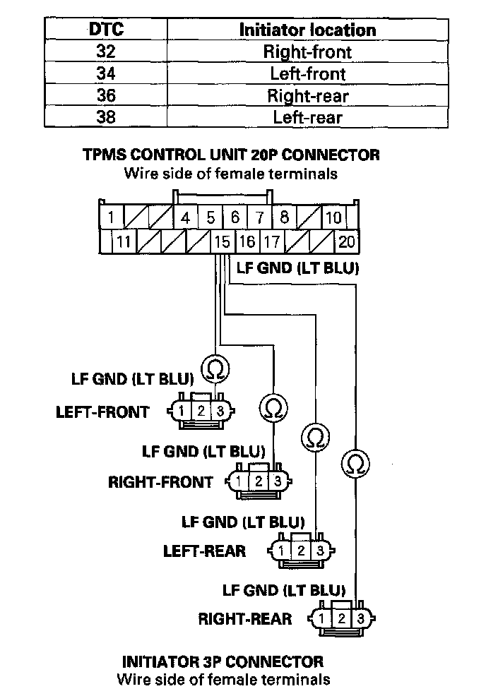

Tire Pressure Monitoring System
DTC 32, 34, 36, 38: Tire Pressure Sensor Transmitting FailureNOTE:
^ Inspect for an aftermarket device interfering with the RF signal from the sensors when turning the ignition switch ON (II).
^ Vehicle must be driven for 3 minutes at 15 mph (24 km/h) or more for DTC 32, 34, 36, or 38 to set.
1. Check the indicated location to make sure the wheel is a TPMS type with the tire pressure sensor.
Is a TPMS type wheel with a tire pressure sensor mounted on the vehicle?
YES - Go to step 4.
NO - Go to step 2.
2. Install a known-good TPMS wheel.
3. To memorize the sensor ID, drive the vehicle above 15 mph (24 km/h) for 40 continuous seconds, or memorize the ID with the HDS.
4. Test-drive the vehicle.
5. Check the VSP in the TPMS DATA LIST with the HDS.
Is the vehicle speed indicated?
YES - Go to step 9.
NO - Go to step 6.
6. Turn the ignition switch OFF.
7. Turn the ignition switch ON (II).
8. Check for DTCs with the HDS.
Is DTC 85 indicated?
YES - Go to the DTC 85 troubleshooting. DTC 85
NO - Check for loose terminals and poor connections at the TPMS control unit. If necessary, substitute a known-good TPMS control unit and recheck.
9. Turn the ignition switch OFF.
10. Turn the ignition switch ON (II).
11. With the HDS, check the indicated tire for the tire sensor status changing to normal.
NOTE: If the HDS screen shows not defined for sensor status, turn the ignition switch OFF, rotate the tire 1/4 turn, then turn the ignition switch ON (II) and try again. If the status does not change to normal, repeat the procedure in the previous sentence until NORMAL is shown.
Is NORMAL indicated within one full turn of the tire?
YES - The system is OK at this time. Clear the DTC with the HDS.
NO - Go to step 12.
12. Turn the ignition switch OFF.
13. Install a wheel with a known-good tire pressure sensor on the vehicle.
14. To memorize the sensor ID, drive the vehicle above 15 mph (24 km/h) for 40 continuous seconds, or memorize the ID with the HDS.
15. Turn the ignition switch OFF.
16. Turn the ignition switch ON (II).
17. With the HDS, check the indicated tire for a normal pressure sensor signal.
NOTE: If the HDS screen shows not defined for sensor status, turn the ignition switch OFF, rotate the tire 1/4 turn, then turn the ignition switch ON (II) and try again. If not defined is still shown, repeat the procedure in the previous sentence until NORMAL is shown.
Is NORMAL indicated within one full turn of the tire?
YES - Replace the tire pressure sensor on the customer's wheel.
NO - Go to step 18.
18. Turn the ignition switch OFF.
19. Disconnect the appropriate initiator 3P connector.
20. Disconnect the TPMS control unit 20P connector.
21. Check for continuity between TPMS control unit 20P connector terminal No. 20 and the appropriate initiator 3P connector terminal No. 1.
Is there continuity?
YES - Go to step 22.
NO - Repair open in the wire between the TPMS control unit and the appropriate initiator.
22. Check for continuity between TPMS control unit 20P connector terminal No. 15 and appropriate initiator 3P connector terminal No. 3.

Is there continuity?
YES - Go to step 23.
NO - Repair open in the wire between the TPMS control unit and the appropriate initiator.
23. Check for continuity between the appropriate TPMS control unit 20P connector terminal and appropriate initiator 3P connector terminal No. 2 (see table).
Is there continuity?
YES - Go to step 24.
NO - Repair open in the wire between the TPMS control unit and the appropriate initiator.
24. Check for continuity between body ground and the appropriate TPMS control unit 20P connector terminal (see table)
Is there continuity?
YES - Repair short to body ground in the wire between the TPMS control unit and the appropriate initiator.
NO - Go to step 25.
25. Measure voltage between body ground and the appropriate TPMS control unit 20P connector terminal (see table).
Is there battery voltage?
YES - Repair short to power in the wire between the TPMS control unit and the appropriate initiator.
NO - Replace the appropriate initiator.